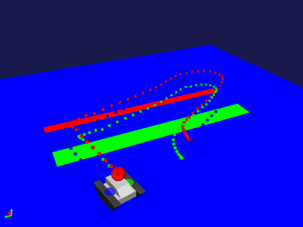

ロボットの移動経路の記録・表示¶
ここでは、モーションキャプチャを使ったロボットの移動経路の記録・表示の仕方を説明します。
モーションキャプチャアイテムの作成と設定¶
シミュレーションの実行主体となるモーションキャプチャアイテムを生成します。
ここでは、Choreonoidの標準のシミュレータアイテムである「AISTシミュレータ」を用います。メインメニューの「ファイル」-「新規」-「モーションキャプチャ」を選択して生成してください。生成したモーションキャプチャは、AISTシミュレータアイテムの子アイテムとして配置します。
パッシブマーカの設定¶
モーションキャプチャでは、ロボットの移動経路の代表点としてパッシブマーカを使用します。パッシブマーカは、カメラやライト等と同様に任意のリンクのelements以下に記述します。
-
type: PassiveMarker
name: RedMarker
translation: [ 0.0, 0.0, 0.3 ]
rotation: [ 0, 1, 0, -90 ]
radius: 0.1
color: [ 1.0, 0.0, 0.0 ]
transparency: 0.3
各キーの詳細は以下の通りです。
パラメータ |
デフォルト値 |
単位 |
意味 |
|---|---|---|---|
radius |
1.0 |
m |
パッシブマーカのマーカの半径を指定します。 |
color |
1.0, 0.0, 0.0 |
-, -, - |
パッシブマーカのマーカの色をRGBで指定します。 |
transparency |
0.0 |
- |
パッシブマーカのマーカの透過度を指定します。 |
symbol |
true |
- |
パッシブマーカを表すシンボルの表示/非表示を指定します。 |
シミュレーションの実行¶
シミュレーションバーから通常通りシミュレーションを実行してください。シミュレーションに終了するとシーンビュー内にパッシブマーカの移動経路が表示されます。また、移動経路はポイントセットアイテムとして記録され、モーションキャプチャアイテムの子アイテムとしてアイテムツリービューに登録されます。ポイントセットアイテムのチェックボタンを押すことで、移動経路の表示・非表示を切り替えることができます。記録した移動経路は、ホームディレクトリのcapture以下にパッシブマーカ毎に格納されています。
